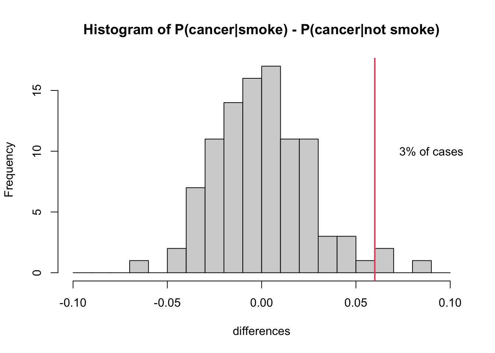

Chapter 11 How You Will Die: Causes or Conditions?
Causes of death, colloquially
We now pause our inquiry into when you will die and concentrate for some time on how it might happen. Let us pay another visit to Nathan Yau’s series of (interactive) visualizations for Flowing Data. We already discussed Years You Have Left to Live, Probably. Another of them is called Causes of Death and the last How you will die (links work if you download the PDF but do not work within Perusall).
These visualizations are really a treasure trove. So much going on. I’ve reproduced an image from Causes of Death below, but you really should interact with it on the web.

Figure 11.1: Screenshot of Causes of Death visualization
Take a close look at the image in Figure 11.1. How many variables are represented here? (Pause and think this over.) There are fifteen color bands representing causes of death, but these are not each variables. Rather, they are categories of a single variable: cause-of-death, as operationalized by the Centers for Disease Control and Prevention.7 These include cancer, congenital defects, and external causes (e.g., pianos falling on your head), among others. Along the bottom of the image we see age, which is another variable. Indeed, the most salient aspect of this visualization is how much the relative importance of different causes of death changes over the course of one’s life span.
If you die in your 20s, it is likely that you died from external causes. While if you died in your 80s, it is more likely because of a circulatory or respiratory disease. This intuitive sense-making is an example of conditional probabilities. It may not be a two-way table, but Figure 11.1 is in many ways analogous to a two-way table. The two variables are age-at-death and cause-of-death. Although we are not putting numbers to the probabilities we can read this image as indicating that
P(cause = external | age in 20s) > P(cause = circ or resp | age in 20s)(read, the probability that cause of death is external given that age of death is in ones 20s…). While the opposite is true in your 80s:
P(cause = external | age in 80s) < P(cause = circ or resp | age in 80s)There is an important difference between this particular figure and a two-way table of counts. This figure shows relative proportions of death for each age, not absolute numbers. As we know, and even visualized explicitly in Chapter 9, the count of deaths is much higher among adults in their 70s and 80s than among those in their 20s. Figure 11.1 does not communicate that. Instead, by ignoring the overall scale, the figure allows us to focus on the shifting importance of different causes.
A two dimensional figure is used here to represent relationships between two variables (age-at-death and cause-of-death), but there are more than two variables here. The additional variables require using the tabs at the top. Sex is here, as well as race. Note that although sex and race categories are all switched between by using tabs, they are not, of course, categories belonging to a single variable. This is something that I slightly dislike about this visualization. The way it is designed, it feels as though one cannot observe, or condition on, sex and race at the same time.
So there are four variables (did you get it right?). We can, in principle, imagine conditioning on any or all of them. For example, we could ask what is the probability of death by endocrine disease for (i.e., given, conditioned on) an African-American male aged 65-70. We might write something like this in probability notation as,
P(cause = endocrine | race = African-American, sex= male, age = 65-70) = ?Yau also draws your attention to another feature of this visualization: “When you select races, you might notice that the smaller groups, American Indian and Asian, appear to be more jagged, whereas cause of death for the larger groups, black and white, appear to be smoother. This is likely due to population size more than anything else. It’s a smaller sample, and there’s higher variance.”
The sample size factors in here, because CDC data are being used to estimate a proportion. For example, what proportion of 65-year-old deaths are the result of circulatory disease. Suppose we knew the true proportion in the total population. If we took only a sample from this population, we will not always find exactly the same proportion. For small samples, the proportion in each sample will appear to vary a lot. While for large samples, the proportion will vary but in a smaller range. We will revisit this idea again when we discuss making bets.
Yau’s final visualization in the trio, How You Will Die, combines elements of causes-of-death and years-you-have-left-to-live. The visualization is dynamic, and the passing of time is like a sped up version of your life. In Figures 11.2-11.4, I have reproduced still snapshots taken at three different “ages,” starting with the simulation settings: Asian female, age 21.

Figure 11.2: Screenshot 1 of How You Will Die visualization
Figure 11.3: Screenshot 2 of How You Will Die visualization

Figure 11.4: Screenshot 3 of How You Will Die visualization
In this visualization, you can tell that death becomes more probable (and eventually certain) as you get older. The dots fill up slowly (except at the very beginning, when early childhood disease can play a role) and then more quickly. The colors represent causes. In the two-dimensional plane of dots, we get a sense of the randomness of the draw. But we also perceive the relative importance of causes by the areas taken up by purple and red. These are collected into a bar plot on the right side. At the base of each bar, the proportion is reported as a percentage of all deaths by this age.
Hold my beer
So far, we have conditioned on things that you can’t change, like your age, race, or sex-at-birth. But what if I tell you that I’m about to do something really stupid risky. Like suppose I told you I was going to eat a bunch of Pop Rocks and drink a lot of Coke, which we all know killed Little Mikey, the child star from the Life cereal commercials?8
If I am about to engage in highly risky behavior, you might not want to put the probability that I die this year at the 1% or 2% base rate from the life tables. You might think I have a 37% chance of dying from an exploded stomach. Which, by the way, is an external cause. So you might think that the conditional probability of death by external causes should go up, but not the probability of death by respiratory disease.
When there is something that you can change, or manipulate, such as engaging in a particular behavior (e.g., driving, rock climbing, or eating Pop Rocks and Coke), then we can imagine what might have happened if you didn’t do something that you did (or did something that in reality you didn’t do). This is what is known as a counterfactual claim, such as “if I didn’t check my email this morning before leaving the house, I would not have missed the train.” Maybe. But how can we know?
Our knowledge about the world is based on a combination of observations. (I am distinguishing knowledge from belief, but epistemology is a big topic and beyond our scope at the moment!) Some of those observations are of the form where we do not deliberately manipulate conditions in the world, such as treatments, behaviors, or environmental factors. We just observe the joint occurrences of events in samples, such as health outcomes, behaviors, pollution levels, etc. Analysis of these kinds of data are called observational studies. We can also do experiments, sometimes, where we gather a sample of people and assign half of them to do something (e.g., take medicine, or sleep in a cabin) and half of them to do something else (e.g., take a placebo, or watch an informational video). These are experimental studies.
It is often said that experimental studies are the best way to develop knowledge about causation, that is, answers to questions of the form, does A cause B? Does eating meat cause heart disease? Does smoking cause lung cancer? And are experiments the only way to answer such questions?
What does it mean to say A causes B? The philosopher David Hume was one of the first to shed light on the question of how we conceive of causation. In the past twenty years, statistical thinking about causality has also changed a lot. In this course, we are going to take a pragmatic approach and focus on how we use the concept of causation in everyday life. It will be helpful to review our distinction between deterministic and stochastic processes and between associated and independent events.
Non-deterministic Causation
If I hit a porcelain tea cup hard with hammer and the tea cup breaks, we can safely say that hitting the teacup with a hammer caused the cup to break. We don’t really feel the need to say that if you hit a teacup hard with a hammer, there is a 99.9997% chance that it will break. Even if that’s actually true. And we don’t feel the need to define “hard” in this case either. We use an example like a teacup and hammer when we want to focus on the common-sense big picture and not the details. And the big picture here says that hitting a teacup with a hammer deterministically causes the teacup to break. Let us also assert that if we do not hit the teacup, and it just sits there, then it will not spontaneously break. In the case of the physics of hammers and teacups, we feel that we know this much is true.
What about buying a lottery ticket? Does buying a lottery ticket cause one to win the lottery? Well, you certainly are not guaranteed to win the lottery if you buy a ticket. (In fact, your chances will be very low. The subject of making money is the next Big Question). But you can’t possibly win if you don’t buy a ticket. So, strictly speaking, buying a ticket does influence the probability of winning.
We’ve now discussed two examples. In the first case (hammer and teacup):
- If A (hammer hits teacup) then definitely B (teacup breaks)
- If not A (hammer does not hit teacup) then definitely not B (teacup does not break)
In table form:
| Teacup breaks | Teacup doesn’t break | |
|---|---|---|
| Hammer hits teacup | Always* | Never |
| Hammer does not hit teacup | Never | Always |
*pretty much; we’re not splitting hairs here.
In the second case (lottery ticket):
- If A (buy lottery ticket) then maybe B (win lottery) and maybe not B (do not win lottery)
- If not A (do not buy lottery ticket) then definitely not B (do not win lottery)
| Win lottery | Do not win lottery | |
|---|---|---|
| Buy lottery ticket | Rarely | Probably |
| Do not buy ticket | Never | Always |
What about this question: does smoking cause cancer? Does it fit either of these two cases? Unfortunately the question about smoking does not. It belongs to a yet another case.
In the third case (smoking):
- If A (smoke) then maybe B (cancer) and maybe not B (no cancer)
- If not A (do not smoke) then maybe B (cancer) and maybe not B (no cancer)
| Get cancer | Do not get cancer | |
|---|---|---|
| Smoke | Maybe | Maybe |
| Do not smoke | Maybe | Maybe |
Now I’m not saying that the chances of cancer are the same whether you smoke or not. That remains an open question so far as our present argument goes. But even thus far, we can see that the smoking causality question, posed this way, invites some more questions.
How big a difference does there have to be between the cancer rates for smokers and non-smokers for us to be convinced that there is an association between smoking and cancer? And if there is an association between smoking and cancer, what would drive us to call this a causal relationship, to say that smoking causes cancer? Could there be a third variable? Could causality go the other way?
At minimum, we may say that there is no causation without association. If two events are independent (that is, they co-occur with frequencies that are consistent with their being independent events), then it does not make sense to say that one causes the other.
Testing for an association between two variables
Let’s focus on the first question: How big a difference does there have to be between the cancer rates for smokers and non-smokers for us to be convinced that there is an association between smoking and cancer? Our approach to answering this question will be very similar to the one we used in Chapter 3 where we were considering associations between two-types-of-people questions. The method for establishing association is quite general.
Caveat: we are going to vastly oversimplify the problem here and use made up numbers. Smoking is not a dichotomous variable. People can smoke more or less heavily and for different durations. They may have already quit or be active smokers. For this worked example, we will imagine that we are sampling people between the ages of 50 and 75. We will operationalize smokers as heavy smokers: people who smoked the equivalent of at least 10 cigarettes a day for at least 20 years.
Suppose that we are able to obtain a randomly selected sample of 1000 people in this age group. For each one, the following information is available: a) whether the person is/was a heavy smoker and b) whether the person has ever been diagnosed with cancer. The beginning of our dataset might look something like this:
| Cancer? | Smoke? | |
|---|---|---|
| Person 1 | No | No |
| Person 2 | No | Yes |
| Person 3 | Yes | No |
| Person 4 | No | No |
| Person 5 | No | Yes |
| Person 6 | Yes | Yes |
As a first step, you tabulate the data and get the following contingency table:
| Cancer: Yes | Cancer: No | |
|---|---|---|
| Smoke: Yes | 46 | 204 |
| Smoke: No | 93 | 657 |
Then, you use the table to estimate the following:
\[P(\text{Cancer}|\text{Smoke})=\frac{46}{46+204}=0.184\]
\[P(\text{Cancer}|\text{Not Smoke})=\frac{93}{93+657}=0.124\]
You might say that these numbers suggest an association (i.e., dependence) between smoking and cancer: Within this sample, a higher proportion of smokers were diagnosed with cancer than non-smokers. But is this enough of a difference to convince you that, if you went out and found 1000 new (random) people, you would still observe a difference of this magnitude?
One way to start trying to answer this question is to consider the following thought experiment: imagine that, among all people in the world, there is NOT a higher incidence of cancer among smokers (as compared to non-smokers). If that were the case, you would expect to see
\[P(\text{Cancer}|\text{Smoke})=P(\text{Cancer}|\text{Not Smoke}).\]
Or, written slightly differently:
\[P(\text{Cancer}|\text{Smoke})-P(\text{Cancer}|\text{Not Smoke})=0.\]
In comparison, you observed the following in your sample:
\[P(\text{Cancer}|\text{Smoke})-P(\text{Cancer}|\text{Not Smoke})=0.184-0.124=0.06.\]
So, you could pose the following question: what is the probability that, among the whole population, smokers do not have higher risk of cancer; but, among the random sample of 1000 people that you observed, there is a 6% (or greater) increased incidence of cancer among smokers as compared to non-smokers? This type of question is the basis for hypothesis testing. Often, in hypothesis testing, we form a null hypothesis (in this case, the null hypothesis might be that smokers and non-smokers have equal cancer incidence among the full population) and alternative hypothesis (in this case, the alternative hypothesis might be that smokers have at least 6% higher risk of cancer than non-smokers).
Based on the sample you observed, you could estimate that approximately \(\frac{46+204}{1000}*100=25\) percent of the population smokes and approximately \(\frac{46+93}{1000}*100=13.9\) percent of the population has been diagnosed with cancer. If there is no real difference in cancer incidence among smokers and non-smokers, then these two variables are independent: as though 25% of your sample randomly decided to smoke, and 13.9% were randomly diagnosed with cancer.
It is easy to simulate datasets under this assumption. In two completely separate (independent) steps, we will randomly assign to each of our 1000 people, a 25% chance of being a heavy smoker and a 13.9% chance of getting cancer. In Chapter 3, we imagined starting with a fixed number of responses (e.g., smoker/non-smoker), shuffling those responses, and then redistributing the values among our virtual subjects. The code below actually does something different. It will draw values with replacement for each of the two variables. This means that in each replication, we will not actually have exactly 250 smokers and 139 cancers. The numbers will fluctuate somewhat in each simulated dataset.
After we generate our simulated datasets, we can calculate \(P(\text{Cancer}|\text{Smoke})-P(\text{Cancer}|\text{Not Smoke})\) and observe what range of values occurs. We will be particularly interested in the proportion of the time that this difference is greater than or equal to \(0.06\). That was our observed value. And in this simulation, we know that the two variables are independent. Thus, we are quantifying the chance of observing such a difference in outcomes due to random chance.
set.seed(5123)
#set some number of iterations/replications
nIter = 100
#create vector to save differences in proportions
differences = vector(length = nIter)
for(i in 1:nIter){ #repeat the following process nIter times
#create some fake data and save it as "fakedata"
fakedata = data.frame(Smoke = sample(c("Y", "N"), size=1000,
prob=c(.25, .75), replace = T),
Cancer = sample(c("Y", "N"), size=1000,
prob=c(.139, .861), replace = T))
#use the fake data to calculate P(cancer|smoke)
CgivenS = table(fakedata)[2,2]/sum(table(fakedata)[2,])
#use the fake data to calculate P(cancer|not smoke)
CgivenNS = table(fakedata)[1,2]/sum(table(fakedata)[1,])
#save P(cancer|smoke) - P(cancer|not smoke) in the ith location of differences
differences[i] <- CgivenS - CgivenNS
}
#calculate proportion of differences greater than or equal to .06
propGreater <- sum(differences >= .06)/nIter
#plot a histogram of the differences with a red vertical line at .06
hist(differences, main="Histogram of P(cancer|smoke) - P(cancer|not smoke)",
xlim=c(-0.1,0.1), breaks=seq(-0.1,0.1,0.01))
abline(v=.06, lwd=2, col=2)
text(0.09, nIter/10, paste0(propGreater*100,"% of cases"))
As you might expect, the histogram of simulated differences (\(P(\text{Cancer}|\text{Smoke}) - P(\text{Cancer}|\text{Not Smoke})\)) is centered around zero. If there’s no real difference, then you should expect to observe (close to) zero differences among any random sample of 1000 people. That said, you’ll see from the histogram that it is still possible, by random chance, to observe a difference as large or greater than 6%.
In fact, in our simulation, this happened 3 times (3% of the time). Remember that our simulation was carried out assuming independence, in which case there should be no difference. So we might interpret our findings as follows: there is a relatively low probability of observing \(P(\text{Cancer}|\text{Smoke}) - P(\text{Cancer}|\text{Not Smoke})\ge .06\) in a sample of 1000 people if it were truly the case that this difference was zero.
Operationalization of a variable is a fancy and more specific word for defining it. It doesn’t seem necessary to define “cause of death” in the common-sense use of the word define. But when we decide how many and which categories to include in our use of the variable, we operationalize this definition. For example, we could operationalize cause of death as “natural causes” or “other.” This would be a dichotomous operationalization. And it leaves a lot to the imagination. The Center for Disease Control is particularly interested in diseases and not in external causes. So it makes sense that all external causes are banded together in this figure. However, don’t be fooled. There are many subcategories, including very specific ones like “Pedal cyclist injured in collision with heavy transport vehicle or bus.”↩︎
Okay, yeah, this is an urban legend: https://www.snopes.com/fact-check/pop-rocks-soda/↩︎